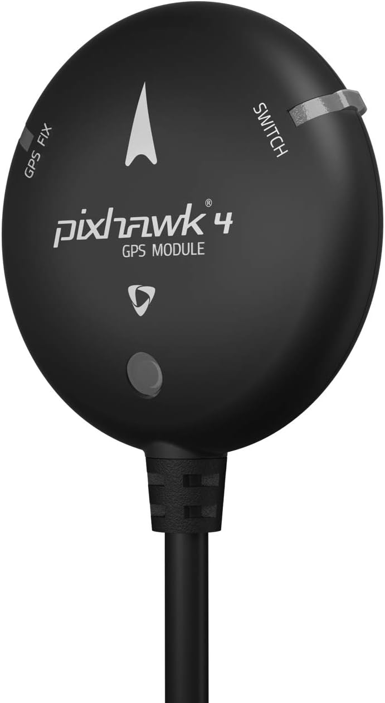

Amazon.ca · GPS + Brújula
HolyBro Pixhawk 4 Neo-M8N GPS
Módulo GPS Neo-M8N con brújula (IST8310) integrada para Pixhawk. Habilita posicionamiento, regreso a casa (RTL) y vuelo autónomo por waypoints.
Ver precio en Amazon
- Receptor GPS Neo-M8N de alta sensibilidad.
- Brújula (magnetómetro IST8310) integrada.
- LED tricolor indicador de estado / GPS fix.
- Posicionamiento, regreso a casa (RTL) y waypoints.
- Cable de 10 pines compatible con Pixhawk 4.
- Antena cerámica de parche para arranque rápido.